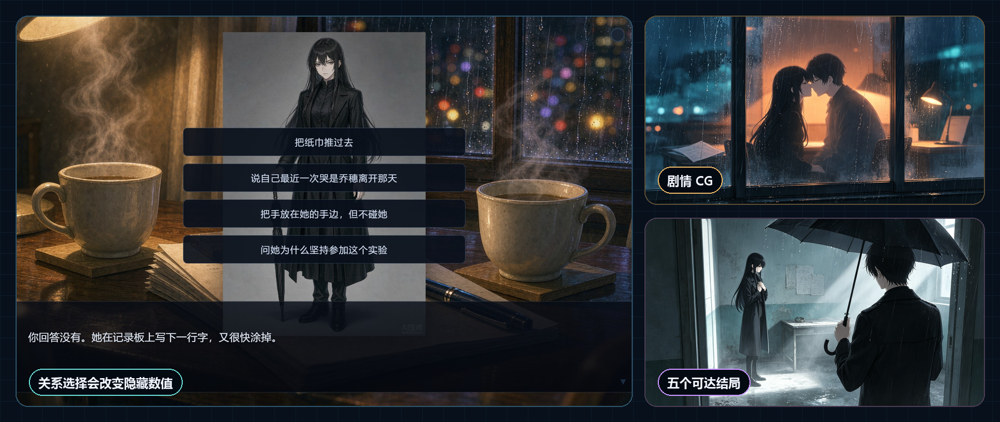
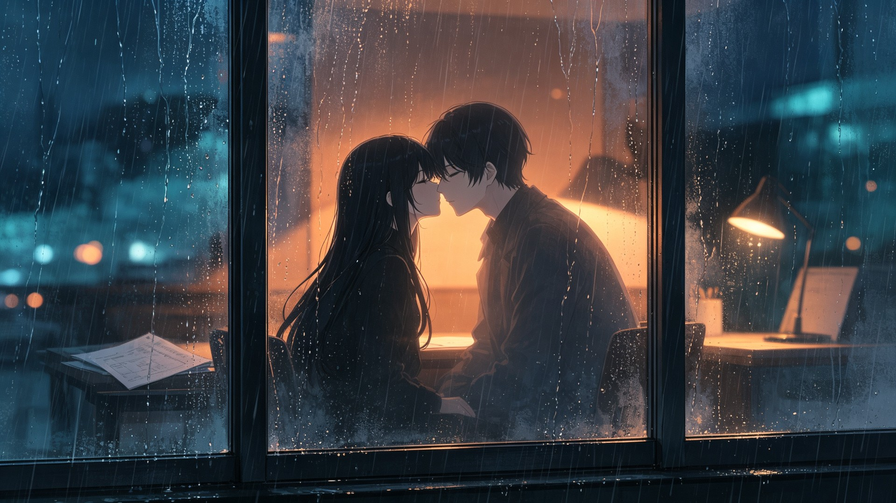
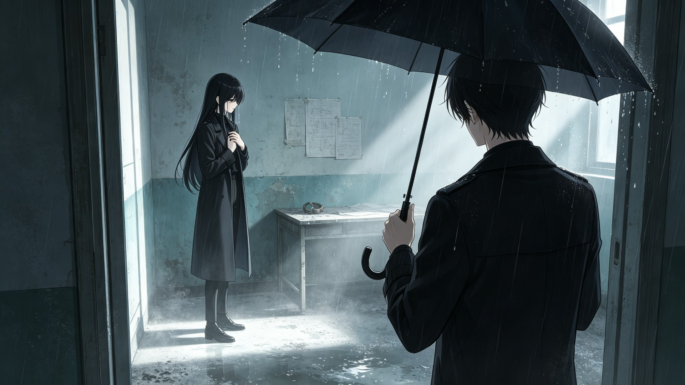
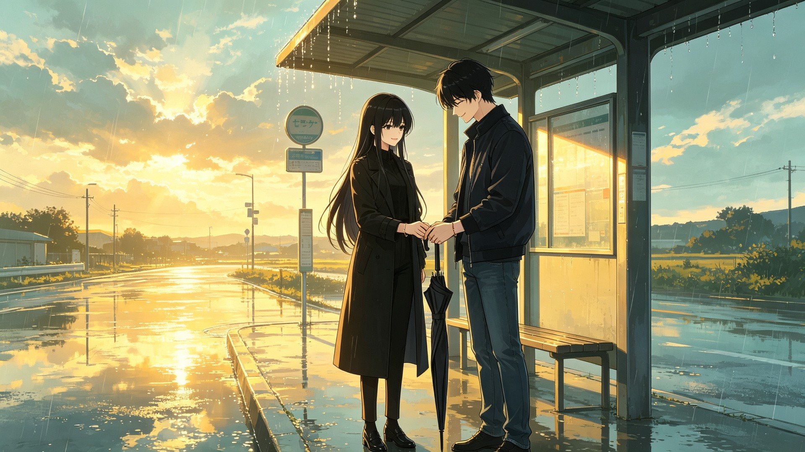
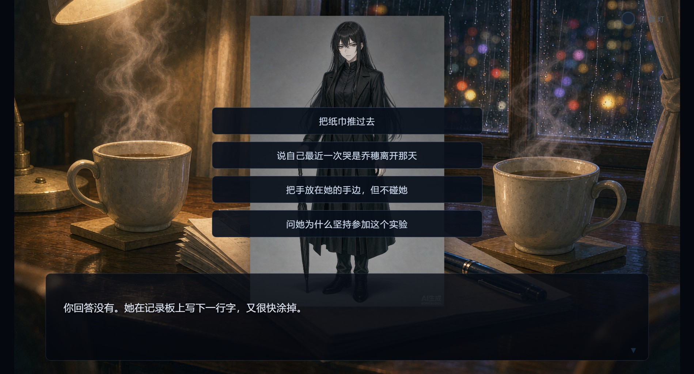

“他们说第八夜不存在。原来他们不是指时间，而是指房间。”
免费发布 · Windows 10 / 11 · 单周目 30 至 60 分钟 · 5 个结局
七天恋爱实验。第八夜不存在。
如果一段关系只能存在七天，你还会开始吗？你和陌生人 S-07 共同生活七天，完成关于信任、边界和心跳同步的任务。第七夜，同频灯亮了；也是那一夜，她姐姐失踪的 008 房间重新出现。
她本来应该是主试，却成了你的同居对象。你们越靠近，心率曲线越同步；她越靠近真相，那个被封死的房间就越无法被忽视。每一次“要不要再近一点”，都同时关于亲密、欺骗和边界。
信任、同频、真相、清醒四个隐藏数值共同影响结局。
能不能牵手、能不能靠近、要不要先问，都是必须认真回答的选项。
黑伞、旧手环、末班车和 008 房间，把一段关系引向同一个雨夜。
最坏的结果不是分手，而是你们都没有真正听懂对方。
单周目约 30 至 60 分钟，一周目可以完整通关。
立绘差分、剧情 CG、雨夜视频、BGM 与音效。

实际游戏画面
雨窗将吻
答案之后
雨停了就回家
关系选择“他们说第八夜不存在。原来他们不是指时间，而是指房间。”
免费发布 · Windows 10 / 11 · 单周目 30 至 60 分钟 · 5 个结局
下载 Windows 安装包后直接运行。首次启动按提示创建本地账号，游戏进度保存在当前电脑，不需要外部服务器。
不是。作品更偏向心理悬疑和关系描写，主要通过信息差、回忆与选择制造压力。
约 30 至 60 分钟。游戏包含五个可达结局，可以在关键选择处继续探索。
不需要外部服务器。首次启动会创建本地账号，进度保存在当前电脑。
这是个人开发者未购买代码签名证书时常见的提示。选择“更多信息”，再点击“仍要运行”即可。
把游戏分享给喜欢视觉小说、心理悬疑或互动叙事的朋友，比单纯点一个赞更有用。你也可以在仓库留下真实反馈，或点 Star 帮助更多同类玩家发现它。